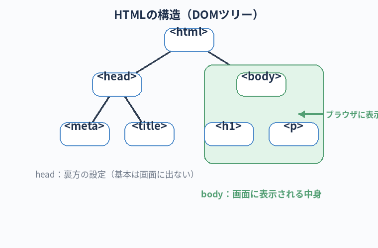

自分の Mac で HTML ファイルを作って、ブラウザで開いて、最終的にインターネット上に公開するまでをやり切る。
ついでに HTML が「何の道具か」が分かる。
実装練習①：HTML で Hello World
この章のゴール
HTML って何？
HTML（エイチティーエムエル）は、Web ページの構造を書くための言語です。 あなたが今読んでいるこのページも HTML で書かれています。
雑に言うと「ここは見出し」「ここは段落」「ここはリスト」とタグで囲んでいくだけ。 プログラミング言語というよりは 「文書の役割を表現するためのマークアップ」です。
絶対に覚える：HTML の用語
これから何度も出てくる、HTML の基本パーツの呼び方です。「タグ／属性／要素」の3つは口で説明できる状態を目指してください。
Tagタグ
- 一言で
< >で囲まれた、HTML の最小パーツ。例：<h1>、<p>- たとえると
- 役割を貼り付ける付箋。「ここは見出しだよ」「ここは段落だよ」と意味を割り振る
- 関連
- 開始タグ
<p>/ 終了タグ</p>
Element要素（エレメント）
- 一言で
- 開始タグ＋中身＋終了タグの1セット全体。例：
<p>こんにちは</p> - たとえると
- 「タグ」がパーツ名、「要素」が完成した1部品
- 関連
- タグ / DOM
Attribute属性
- 一言で
- タグに付ける追加情報。例：
<a href="...">のhref - たとえると
- 名札に書く「役職」「部署」のような追記情報
- 関連
- class / id / src / href
DOCTYPEドクタイプ
- 一言で
- ファイルの先頭に書く「これは HTML ですよ」の宣言
- たとえると
- 書類の「種類」欄。
<!DOCTYPE html>以外を書く機会はほぼ無い - 関連
- HTML5
head / bodyヘッド／ボディ
- 一言で
<head>＝裏方の設定（タイトル、文字コード）／<body>＝画面に表示される中身- たとえると
- head が「DVD のジャケット情報」、body が「DVD の本編」
- 関連
- title / meta
DOMドム
- 一言で
- HTML をブラウザが読み込んでできる「操作可能な構造」（Document Object Model）
- たとえると
- HTML が「設計図」、DOM が「実際に組み上がった建物」。第10章の JavaScript で操作する対象がこれ
- 関連
- document / 要素
準備：練習フォルダを作る
mkdir -p ~/dev/hello-world cd ~/dev/hello-world
Step 1：AI に最初の HTML を作ってもらう
このフォルダで Claude Code を起動して、こう頼みましょう。
claude
初心者向けの最小の HTML ファイルを作ってください。
ファイル名は index.html、中身は「Hello, World!」と画面中央に大きく表示されるだけのシンプルな内容で。
初心者なので、各タグの意味も簡単にコメントで添えてください。
ファイル名は index.html、中身は「Hello, World!」と画面中央に大きく表示されるだけのシンプルな内容で。
初心者なので、各タグの意味も簡単にコメントで添えてください。
Claude は index.html を作る案を提示し、許可を求めてきます。
内容を見て、問題なければ承認してください。
できる HTML の例
<!DOCTYPE html> <html lang="ja"> <head> <meta charset="UTF-8"> <title>最初のページ</title> </head> <body> <h1>Hello, World!</h1> </body> </html>
Step 2：ブラウザで開いてみる
open index.html
Mac の標準ブラウザ（Safari）で index.html が開きます。
画面に大きく「Hello, World!」と出れば成功です。
Step 3：HTML の中身を読んでみる
Cursor で index.html を開いてみましょう。
Cursor を起動 → 「Open Folder」で ~/dev/hello-world を選びます。
各タグの意味（最低限）：
| タグ | 意味 |
|---|---|
<!DOCTYPE html> | 「これは HTML 文書です」という宣言 |
<html lang="ja"> | HTML 全体の入れ物。lang="ja" は日本語表記の指定 |
<head> | ページのメタ情報（タイトル・文字コードなど）。画面には出ない |
<meta charset="UTF-8"> | 文字化けを防ぐおまじない |
<title> | ブラウザのタブに表示される題 |
<body> | ここの中身が画面に表示される |
<h1> | 大見出し（一番大きい） |
最初は全部覚えなくていいです。「
body の中に書いたものが画面に出る」だけ覚えておけばOK。

Step 4：自分でも触ってみる
Cursor で index.html を開いて、<h1>Hello, World!</h1> の下に新しい行を追加してみましょう：
<h1>Hello, World!</h1> <p>このページは私が初めて作ったページです。</p>
保存して（command + S）、ブラウザを更新（command + R）してみてください。
新しい段落が表示されているはずです。
Cursor を開いてコードを行き来する時、まだトラックパッドでスクロールしてないだろうな？
コードファイル間の移動は command + P、行ジャンプは command + G、置換は command + shift + H。
ショートカットキーで動けるようになると、見た目以上にコードを読むスピードが上がる。
「分からないショートカットがある」と思ったら、即 AI に「Cursor で〇〇するショートカットは？」と聞け。即答してくれる。
Step 5：「サーバーに上げる」ってどういうこと？
今、ブラウザで開いている HTML は「あなたの Mac の中にだけ存在する」状態です。
URL を見ると file:///Users/... のようになっていて、これは「自分の Mac のファイル」を指しています。
これをインターネット上で誰でも見られる場所に置く作業が「サーバーに上げる」「公開する」「デプロイする」などと呼ばれるものです。
Step 6：GitHub Pages で公開する（お手軽な方法）
無料で簡単に Web ページを公開できる仕組みとして、GitHub Pages が便利です。 GitHub のアカウント・初期設定は第11章で詳しく扱いますので、本章では「概要だけ」押さえておきます。
- GitHub にアカウントを作る（第11章で手順を案内）
- 新しい「リポジトリ」を作る（コードの入れ物。第11章）
- 今作った
index.htmlをそのリポジトリに上げる（push する。第11章） - リポジトリの設定で「Pages」を有効にする
https://<あなたのID>.github.io/<リポジトリ名>/でアクセスできるようになる
第11章で実際に手を動かして公開まで持っていきます。 ここでは「自分が作ったページが世界中からアクセス可能になる」というイメージだけ掴んでください。
Step 7：Claude に「公開までの手順」を聞いてみる
GitHub Pages を使う流れを Claude にまとめてもらうのもいい練習になります。
今このフォルダにある index.html を、GitHub Pages で公開したいです。
私は GitHub アカウントを持っていない初心者です。アカウント作成から公開まで、ステップごとにめちゃくちゃ丁寧に教えてください。
私は GitHub アカウントを持っていない初心者です。アカウント作成から公開まで、ステップごとにめちゃくちゃ丁寧に教えてください。
Claude が手順を教えてくれます。分からない単語が出てきたら、その都度「これって何？」と聞き返すのがコツです。
つまずきやすいポイント
- ブラウザに何も表示されない：HTML のタグの綴りミス。Claude に「このコードに間違いある？」と聞くのが早い
- 文字化けする：
<meta charset="UTF-8">が抜けている - ファイルが見つからないと言われる：
cdで正しい場所にいるか確認
本章のチェックリスト
すべてチェックを付けると「次の章へ」のリンクが解放されます。
チェック 0 / 4
次の章へ
プレーンな HTML はちょっと味気ないですね。 次の第9章では、CSS で見た目を整えていきます。ここから AI と相談する場面が増えます。